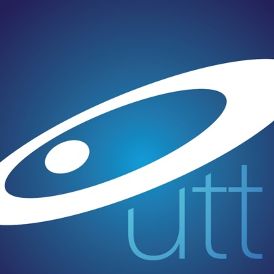
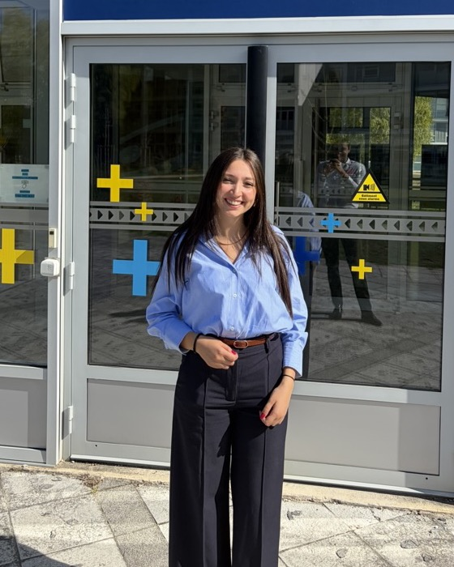

2025 – 2026Mastère Spécialisé® Expert Big Data Engineer
Université de Technologie de Troyes (UTT)
Je conçois et déploie en production des solutions d'IA générative et des pipelines de données, du cadrage métier à la mise en production.

Ingénieure IA avec 2 ans d'expérience en Data & IA, spécialisée dans la conception et le déploiement de solutions LLM/RAG en production. J'ai mené un projet de bout en bout, du cadrage métier à la mise en production : un assistant RAG utilisé quotidiennement par 80 experts.
J'ai aussi un solide socle en Data Engineering (pipelines temps réel, 2 M d'événements par jour) et en MLOps, et je construis des agents IA et des automatisations avec n8n.
Hitachi Rail STS
Hitachi Rail STS
UIB – Groupe Société Générale
Wevioo

2025 – 2026Université de Technologie de Troyes (UTT)
ECE Paris
ESPRIT, Tunis
Je suis disponible immédiatement. Écris-moi, je réponds rapidement.